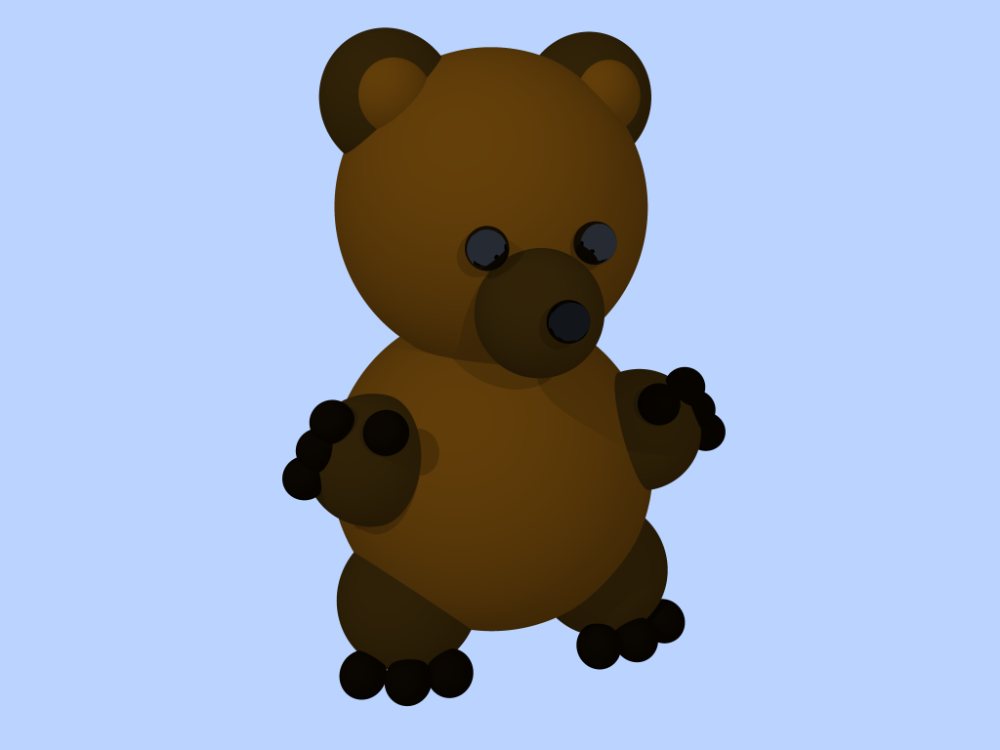
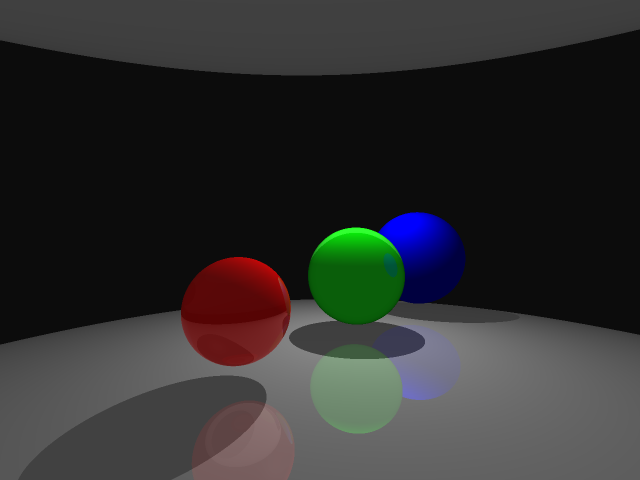
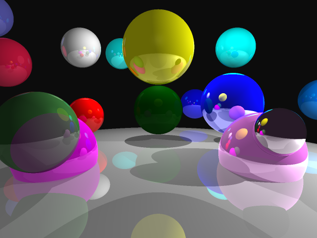
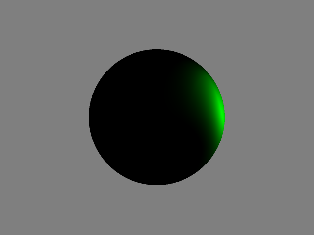
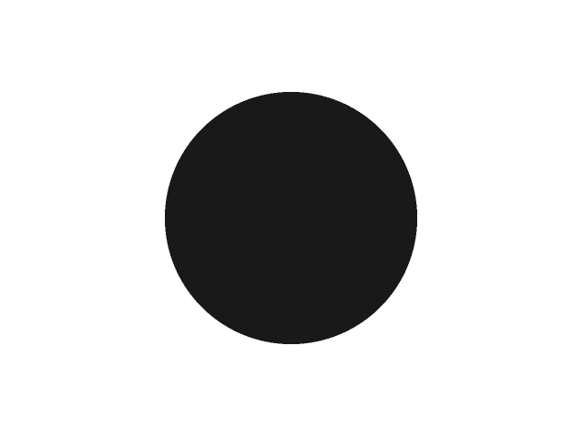

Implementation Details
Part B is essentially an extension of my code base from Part A. All of the rendering logic is implmented in Camera.h, I extended shading code to handle point, spot, and directional lights. I also added code to handle refraction as well as reflections.
You can download the code here
here. There's a
Makefile to help with the compilation. To compile:
make clean && make and to run
./raytracer 'filename'
Difficulties/Issues Faced
Implementing spot light was so hard and adding refraction to my code was so hard. I would get weird artificats on my sphere, rings within the sphere and there was a prominent black border around the green sphere.
Features Implemented
A list of features i was able to implement are listed below, I wasn't able to get the triangle rendering to work.
- Arbitrary camera placement, film resolution, and aspect ratio
- Arbitrary scenes with spheres arbitrary background colors
- Arbitrary materials, including diffuse and specular shading, reflections, and refractions
- Point and directional lights
- Ambient lighting
- Shadows
- Recursion to a bounded depth
Some images that showcase them working. The bear is my favorite, it was very cool and rewarding!
The grey 'ground' sphere showing up on top of the image is a result of the way my camera basis vectors are calculated and I wasn't able to fix it. The grey ground sphere doesn't get reflected to the top of the second image.
 Spot lights were tough, it took a very long time to debug why the angle calculation were not working. This the best I could get it to work.

Ambient lighting was the easiest to implement and worked right off the bat
